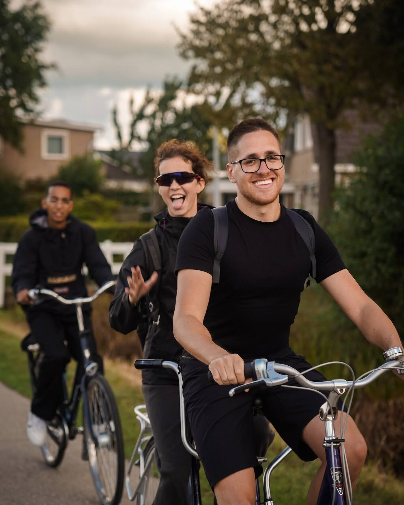
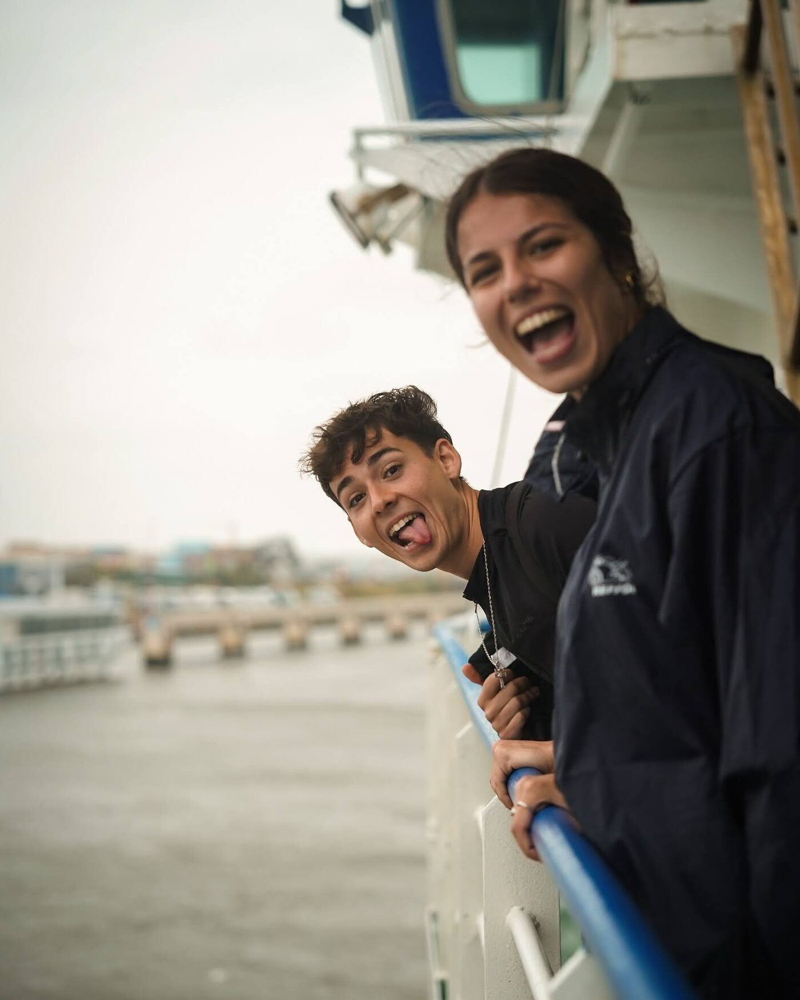
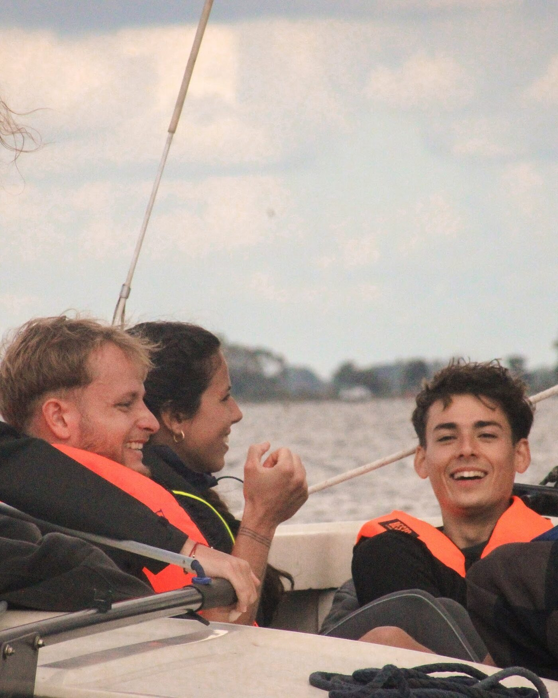

The Dutch Way
Pedal through Friesland, inspire with your lifestyle.
A journey by bike through stories about a healthy lifestyle, The Netherlands.

Pedal through Friesland, inspire with your lifestyle.
We cycled across the northern Dutch landscapes with young people who love healthy living. Some had built a wellness brand, some promoted mental wellbeing, some coached others, and some were simply passionate about living in balance.
Four unique events let them tell their stories, meet local communities and show what healthy living can mean: movement, nutrition, rest and connection.

Across the whole province
More than 150 km by bike through Friesland with the international Eurolibrary team.
Leeuwarden
Historic canals, bold street art and Frisian pride. Open skies, cosy cafés and a creative, down to earth vibe.

Sint Annaparochie
A quiet village with big stories: poetic landscapes, local pride and the roots of Rembrandt's love story. Calm meets curiosity.

Terschelling
Where sea meets sky: windswept beaches, endless bike paths and a rhythm made of nature, freedom and inspiration.

Goingarijp
Tucked between lakes and meadows, a place to slow down and discover Friesland on the water. A hidden gem for nature and sailing lovers.

Photos from the ride
Bikes, ferries, sailboats and long dinners. Tap a photo to see it larger.
What this chapter delivered
Ratings come from the participant feedback form.
What worked
- Four public events held along the whole route through Friesland.
- The rides through the landscape, the sailing, the ferry and the evenings together.
What we learned
- Rain and wind complicated the logistics. The team found alternatives that kept participants safe and the events impactful.
- Participants asked for better food and a larger travel allowance, and suggested announcing public events in advance so more people stop to listen.
That I can do more than I think I am capable of, and that my body is stronger than I thought.
I will remember the ferry adventure and the nights dancing.
A library where the books are people
Healthy living is easier to talk about when you are doing it. Cycling across Friesland, the books were coaches, creators and people finding their own balance, and the readers were locals who stopped to ask honest questions about movement, food, rest and connection. Rain and wind forced some changes, and the team found alternatives so the events still went ahead.
How does it work? Readers choose a book from the catalogue and borrow it for a timed conversation. Respect comes first, books decide what they share, and nobody has to agree. The point is to understand.
See how the Human Library works